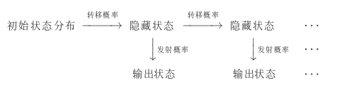

基于统计的分词方法
Jake G September 08, 2019 [算法] #分词 #统计学1.n元语言模型(n-gram)
假设$S$表示长度为$i$，由$(w_1,w_2,\dots,w_m)$字序列组成的句子，则代表$S$的概率为：
$$ P(S) = P(w_1,w_2,\dots,w_m) = P(w_1)*P(w_2|w_1)*P(w_3|w_2,w_1)\cdots P(w_i|w_1,w_2,\dots,w_{m-1}) $$
- $n=1$,uni-gram
$$ P(w_1,w_2,\dots,w_m) =\prod_{i=1}^mP(w_i) $$
- $n=2$,bi-gram
$$ P(w_1,w_2,\dots,w_m) =\prod_{i=1}^mP(w_i|w_{i-1}) $$
- $n=3$,tri-gram
$$ P(w_1,w_2,\dots,w_m) =\prod_{i=1}^mP(w_i|w_{i-2}w_{i-1}) $$
2.基于HMM的分词
HMM的参数
观测序列(输出状态序列),状态序列(隐藏状态序列),初始概率,转移概率(转移概率矩阵),发射概率(发射概率矩阵)

数学定义
状态值集合(隐藏状态):$Q={q_1,q_2,\cdots,q_N}$,$N$为可能的状态数,对应状态序列$I$
观测值集合(输出状态):$V={v_1,v_2,\cdots,v_M}$,$M$为可能的观测数,对应观测序列$O$
转移概率矩阵:$A=[a*{ij}];i,j\in{1,2,\cdots,N}$,从$i$状态到$j$状态的转换概率($\sum*{j=1}^Na_{ij}=1$)
发射概率矩阵(观测概率矩阵):$B=[b_j(k)];j\in{1,2,\cdots,N},k\in{1,2,\cdots,M}$,从状态$j$生成观测$k$的概率
初始状态分布:$\pi$
模型:$\lambda=(A,B,\lambda)$,状态序列$I$,观测序列$O$
HMM中的三个问题:
-
概率计算问题:已知模型,求观测序列$O$出现的概率;前向后向算法
-
学习问题:已知观测序列,求模型参数,最大化$P(O|\lambda)$;鲍姆-韦尔奇(Baum-Welch)算法
-
已知隐藏序列和观测序列(通过频数估计)
$A_{ij}$表示隐藏状态$q_i$转移到$q_j$的频率计数
$$ A=[a_{ij}];a_{ij}=\frac{A_{ij}}{\sum_{s=1}^NA_{is}} $$
$B_{jk}$表示隐藏状态$q_j$转移到观测状态$v_k$的频率计数
$$ B=[b_j(k)];b_j(k)=\frac{B_{jk}}{\sum_{s=1}^MB_{js}} $$
$C(i)$为所有样本中初始隐藏状态$q_j$的频率计数 $$ \Pi = \pi(i)=\frac{C(i)}{\sum_{s=1}^NC(s)} $$
-
仅知观测序列(鲍姆-韦尔奇算法,EM算法)
EM算法:最大似然估计用于没有隐变量的概率模型,EM算法可以用于有隐变量的算法模型
模型参数:
$$ \overline{\lambda} = arg;\max_{\lambda}\sum\limits_{I}P(I|O,\overline{\lambda})logP(O,I|\lambda) $$
-
-
解码问题:已知模型$\lambda$与观测序列$O$,求状态序列$I$最大化$P(I|O)$;维特比(Viterbi)算法
HMM是一种序列模型,不仅可以用到自然语言处理这个领域,其他领域的应用也很常见:股指预测,语音识别,网络安全,基因序列等方面
在自然语言处理中,HMM可以应用在分词,词性标注,命名实体识别等各个方面.
在分词方面可以这样理解HMM
观测序列(输出状态序列)----序列构成的句子或短文
状态序列(隐藏状态序列)----标注
初始概率----统计的第一个字序的概率
转移概率(转移概率矩阵)----第$i$个字序到第$i+1$个自序的标注变换概率
发射概率(发射概率矩阵)----从隐藏状态到输出状态的转换概率
如果把观测序列看作标注,状态序列看作句子,从解码问题转变成学习问题会怎样
在序列预测问题中
HMM模型:当前tag仅依赖前一个tag,当前输出仅依赖当前tag(文档的单词序列是由隐藏状态的标签决定的)
MEMM(最大熵马尔科夫模型)模型:当前tag取决于观察值x(单词)和前一个tag(序列的标签取决于前一个标签和当前的单词)
CRF模型:计算损失时把一句话看作一个整体计算损失
参考资料
1.https://www.cnblogs.com/hiyoung/archive/2018/09/25/9703976.html
2.http://www.52nlp.cn/hmm-learn-best-practices-one-introduction
3.https://www.cnblogs.com/en-heng/p/6164145.html?utm_source=debugrun&utm_medium=referral